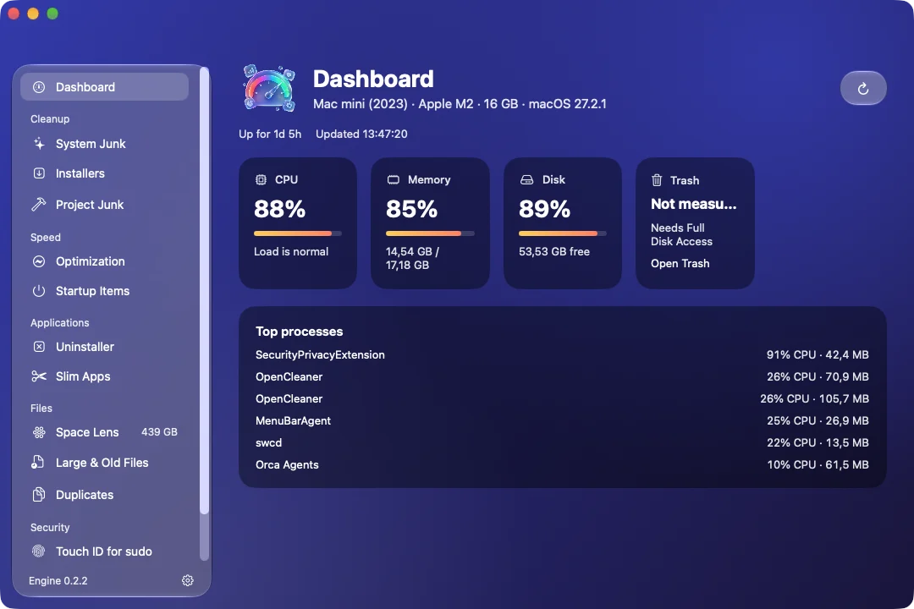
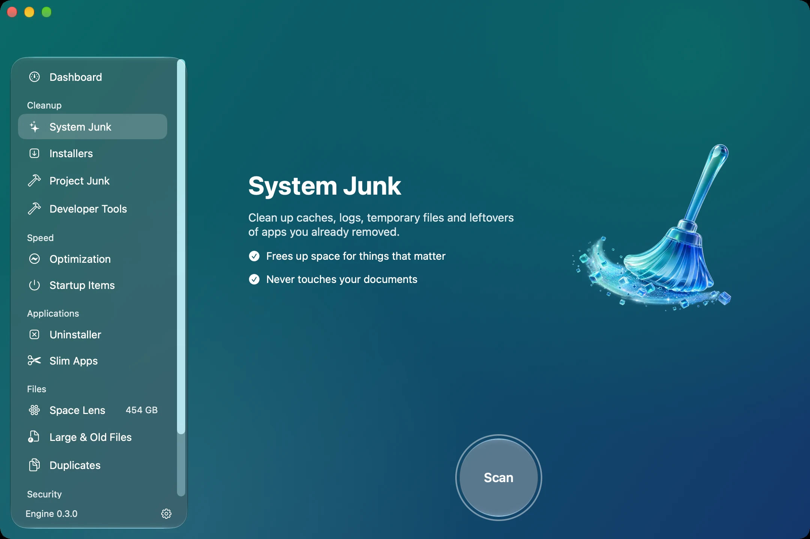
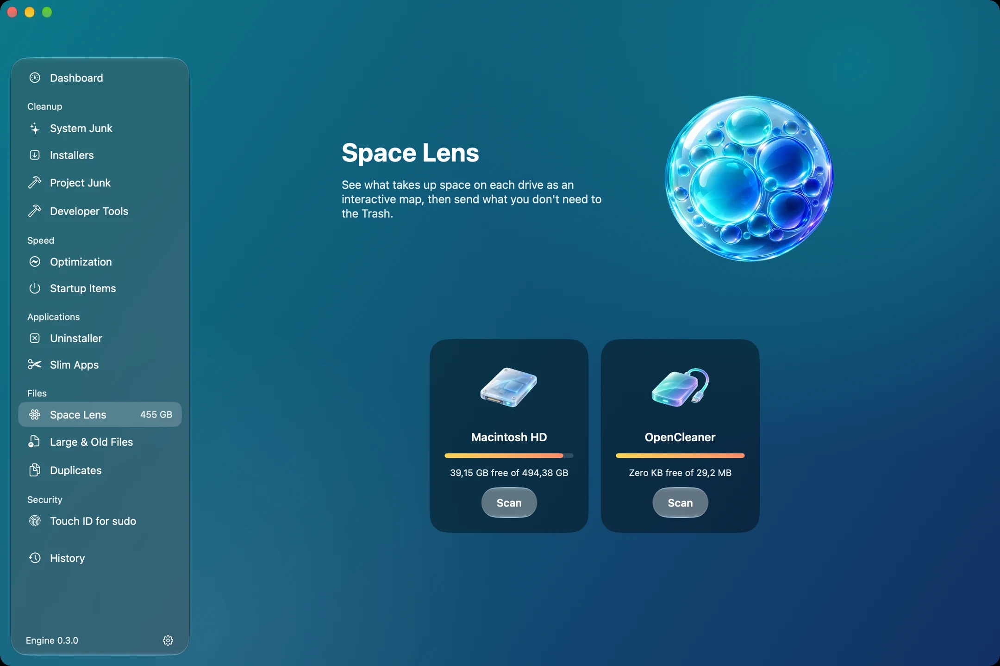
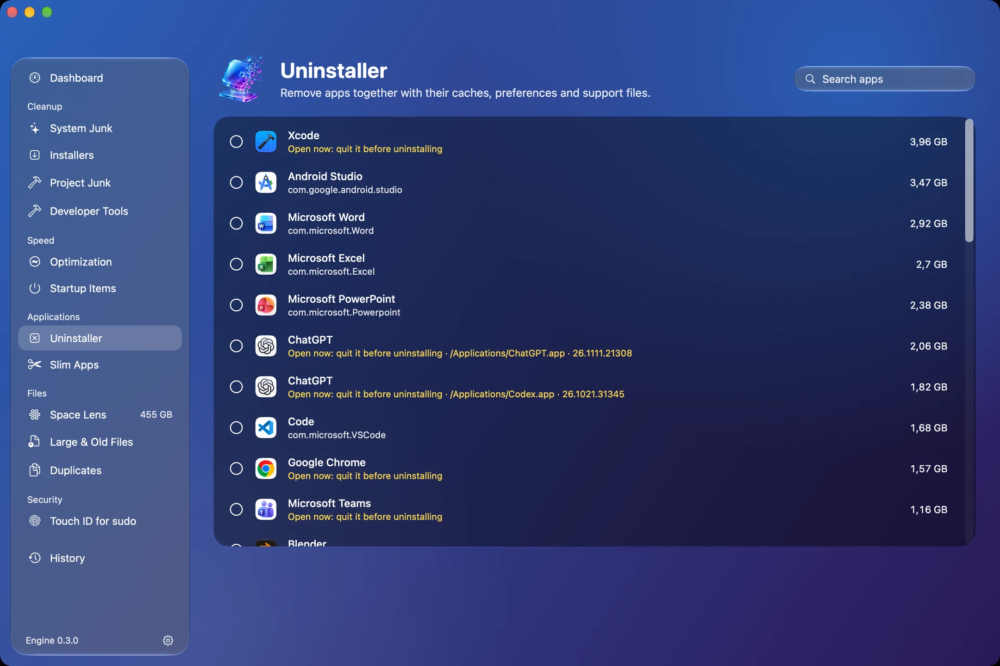

A look insideBên trong ứng dụng
Every tool has its own color, with glass panels on top, in the macOS 26 style. Screenshots from the macOS app.Mỗi công cụ có màu riêng, với các tấm kính phía trên, theo phong cách macOS 26. Ảnh chụp từ ứng dụng macOS.





What it doesỨng dụng làm được gì
Each tool scans first and shows you what it found. You choose what goes.Mỗi công cụ quét trước và cho bạn xem những gì tìm thấy. Bạn chọn thứ cần bỏ.
System JunkRác hệ thống
Caches, logs, temporary files and leftovers of apps you already removed. Never touches your documents.Bộ nhớ đệm, nhật ký, tệp tạm và phần sót lại của ứng dụng đã gỡ. Không bao giờ đụng vào tài liệu của bạn.

InstallersTệp cài đặt
Leftover .dmg, .pkg, .iso, .xip and .zip installers, each with its size.Các tệp cài đặt .dmg, .pkg, .iso, .xip, .zip còn sót, kèm dung lượng từng tệp.
Project JunkRác dự án
Rebuildable build folders: node_modules, target, build, dist and more. Skips projects touched in the last 7 days.Thư mục build dựng lại được: node_modules, target, build, dist… Bỏ qua dự án sửa trong 7 ngày gần đây.
Space Lens
See which folders take the space on each disk, and move what you do not need to the Trash.Xem thư mục nào chiếm chỗ trên từng ổ đĩa, và chuyển thứ không cần vào Thùng rác.
UninstallerGỡ ứng dụng
Remove apps together with their caches, preferences and support files. Apps go to the Trash.Gỡ ứng dụng cùng bộ nhớ đệm, tùy chọn và tệp hỗ trợ của nó. Ứng dụng vào Thùng rác.
Large & Old FilesTệp lớn & cũ
Big files you have not opened for months, and old screenshots on the Desktop.Tệp lớn bạn không mở trong nhiều tháng, và ảnh chụp màn hình cũ trên Màn hình nền.
macOSDuplicatesTệp trùng lặp
Files whose contents are exactly the same. Keep one copy of each.Các tệp có nội dung giống hệt nhau. Giữ lại một bản của mỗi tệp.
macOS
Slim AppsThu gọn ứng dụng
Remove the Intel code from universal apps on Apple Silicon. Originals go to the Trash.Gỡ phần mã Intel khỏi ứng dụng universal trên Apple Silicon. Bản gốc vào Thùng rác.
macOSOptimizationTối ưu
Refresh system caches and services, and repair safe maintenance issues.Làm mới bộ nhớ đệm và dịch vụ hệ thống, sửa các lỗi bảo trì an toàn.
macOSStartup ItemsMục khởi động
See what starts when you log in and turn off what you do not need. System items are shown, never changed.Xem những gì chạy khi đăng nhập và tắt thứ không cần. Mục hệ thống chỉ hiển thị, không bị thay đổi.
macOS
Touch ID for sudoTouch ID cho sudo
Use your fingerprint instead of typing your password in Terminal.Dùng vân tay thay vì gõ mật khẩu trong Terminal.
macOS
Dashboard and menu barTổng quan và thanh menu
Disk, memory and CPU at a glance, also from the menu bar.Ổ đĩa, bộ nhớ và CPU trong một cái nhìn, cả từ thanh menu.

Scheduled cleaningDọn theo lịch
Let System Junk run on a schedule while the app or its menu bar item is open.Cho Rác hệ thống tự chạy theo lịch khi ứng dụng hoặc biểu tượng trên thanh menu đang mở.
macOSHistoryLịch sử
Every removal attempt is written down, so you can see what went and where.Mọi lần xóa đều được ghi lại, để bạn biết thứ gì đã đi và đi đâu.
The Windows app has the Dashboard, System Junk, Installers, Project Junk, Uninstaller (runs each app's own uninstaller), Space Lens (to the Recycle Bin) and History, in English for now. Tools marked macOS are on the Mac only.Bản Windows có Tổng quan, Rác hệ thống, Tệp cài đặt, Rác dự án, Gỡ ứng dụng (chạy trình gỡ của chính ứng dụng), Space Lens (vào Thùng rác) và Lịch sử, hiện chỉ có tiếng Anh. Các công cụ gắn nhãn macOS chỉ có trên Mac.
Fast, and carefulNhanh, và cẩn thận
The engine is OpenCleaner's own, written in Rust and linked into the app: no helper processes, one code base for macOS and Windows.Engine do OpenCleaner tự viết bằng Rust và liên kết thẳng vào ứng dụng: không có tiến trình phụ, một mã nguồn cho cả macOS và Windows.
Compared with the old engineSo với engine cũ
| TaskTác vụ | OldCũ | Rust | Peak RAMRAM tối đa |
|---|---|---|---|
| System Junk previewXem trước Rác hệ thống | 77.8 s | 8.1 s | 159 → 19 MiB |
| Space Lens: startup diskSpace Lens: ổ khởi động | 35.5 s | 17.2 s | 83 → 22 MiB |
| Space Lens: ~/Library | 11.9 s | 4.2 s | 31 → 19 MiB |
| App list with sizesDanh sách ứng dụng kèm dung lượng | 1.9 s | 1.2 s | 14 → 12 MiB |
| Dashboard readingĐọc số liệu Tổng quan | 0.85 s | 0.27 s | 23 → 7 MiB |
| InstallersTệp cài đặt | 0.62 s | 0.01 s | 6 → 6 MiB |
Measured on an Apple M2 Mac mini (8 cores, busy: load average about 5), best of 2 runs, against mo, which earlier versions bundled. Since then the System Junk preview takes 3.2 s. The two engines do not find exactly the same things; details in the README. Đo trên Apple M2 Mac mini (8 nhân, đang bận: load average khoảng 5), lấy kết quả tốt nhất trong 2 lần, so với mo, engine mà các bản trước đi kèm. Sau đó, xem trước Rác hệ thống còn 3,2 s. Hai engine không tìm ra hoàn toàn giống nhau; chi tiết trong README.
How it stays safeCách giữ an toàn
- Nothing is removed without review. Every tool scans first and shows what it would remove; you confirm.
- One set of guards for every tool, checked at scan time and again right before removal: only inside your home folder, never personal folders (Documents, Desktop, Pictures, iCloud Drive, Keychains, Mail, Messages, .ssh…), no symlinks on the way, not while the owning app is running.
- Still the same file (device, inode, type) that was measured, or it is left alone.
- Trash where it matters: apps, installers and slimmed originals go to the Trash, so you can put them back from Finder. Caches are deleted.
- Written down: every attempt goes to a history file you can read in the app.
- Không xóa gì khi bạn chưa xem lại. Mỗi công cụ quét trước và cho thấy sẽ xóa gì; bạn xác nhận.
- Một bộ quy tắc bảo vệ cho mọi công cụ, kiểm tra lúc quét và lần nữa ngay trước khi xóa: chỉ trong thư mục người dùng, không bao giờ đụng thư mục cá nhân (Tài liệu, Màn hình nền, Ảnh, iCloud Drive, Keychains, Mail, Tin nhắn, .ssh…), không đi qua symlink, không xóa khi ứng dụng sở hữu đang chạy.
- Vẫn đúng tệp đã đo (thiết bị, inode, loại), nếu khác thì bỏ qua.
- Vào Thùng rác khi cần: ứng dụng, tệp cài đặt và bản gốc trước khi thu gọn vào Thùng rác, có thể khôi phục từ Finder. Bộ nhớ đệm thì xóa hẳn.
- Có ghi lại: mọi lần xóa được ghi vào lịch sử, xem được trong ứng dụng.
Install notesLưu ý khi cài
OpenCleaner is not notarized by Apple and the Windows exe is not code-signed, so the first launch needs one extra step.OpenCleaner chưa được Apple notarize và tệp exe cho Windows chưa ký số, nên lần mở đầu tiên cần thêm một bước.
macOS
Easiest: paste this in Terminal. It downloads the latest release, checks the app's signature and copies it to Applications (an older copy goes to the Trash). The app opens directly, without the "could not verify" prompt.
Dễ nhất: dán lệnh này vào Terminal. Lệnh tải bản mới nhất, kiểm tra chữ ký của ứng dụng rồi chép vào Applications (bản cũ vào Thùng rác). Ứng dụng mở ngay, không hiện thông báo "không thể xác minh".
curl -fsSL https://raw.githubusercontent.com/BuiHung1612/OpenCleaner/main/install.sh | shOr the DMG: drag the app onto Applications. On first launch macOS blocks it once: open System Settings → Privacy & Security and click Open Anyway. After that the app updates itself.
Hoặc tệp DMG: kéo ứng dụng vào Applications. Lần mở đầu macOS sẽ chặn một lần: mở Cài đặt hệ thống → Quyền riêng tư & Bảo mật rồi bấm Vẫn mở. Sau đó ứng dụng tự cập nhật.
Needs macOS 26 or later.Cần macOS 26 trở lên. Read install.shXem install.sh
Windows
Download OpenCleaner.exe and run it; there is nothing to install. SmartScreen may warn about an unknown publisher: click More info → Run anyway.
Tải OpenCleaner.exe và chạy; không cần cài đặt. SmartScreen có thể cảnh báo nhà phát hành không xác định: bấm More info → Run anyway.
Windows 10 and 11.Windows 10 và 11. All releasesTất cả bản phát hành